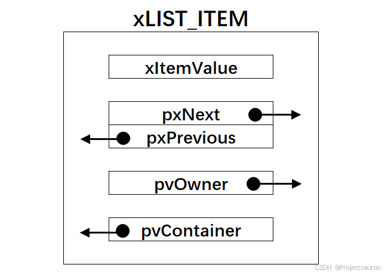
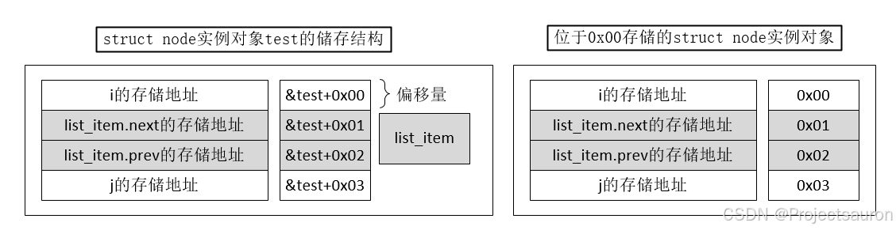
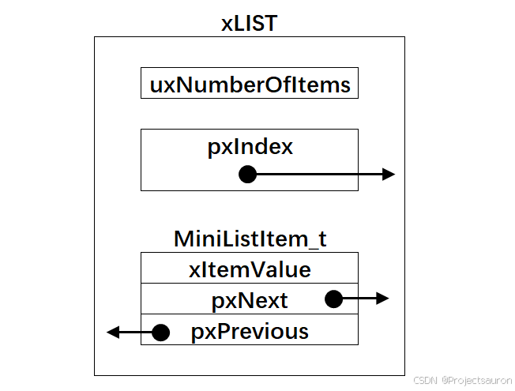
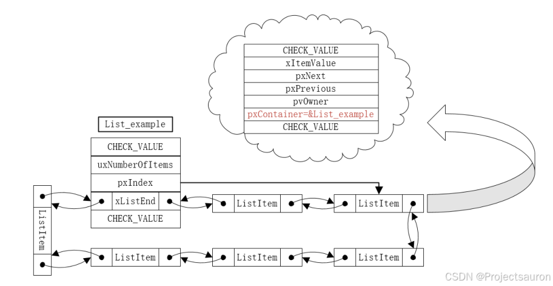
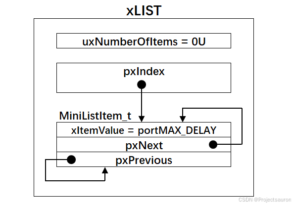
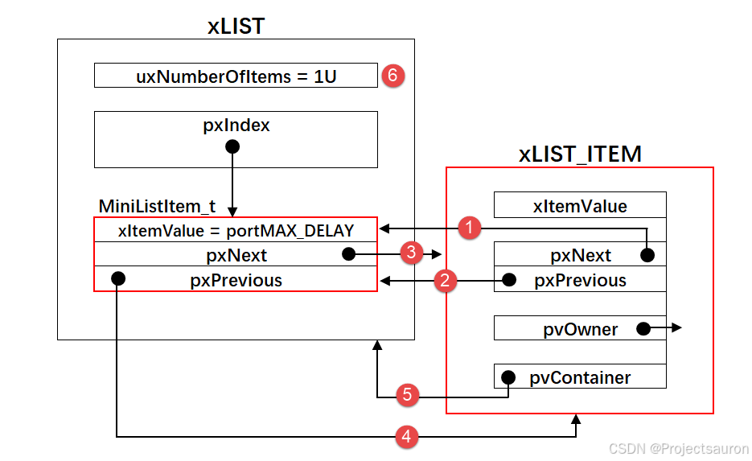
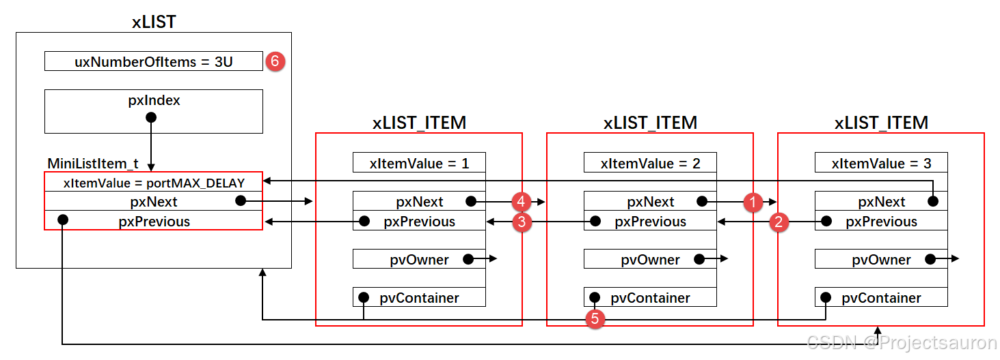
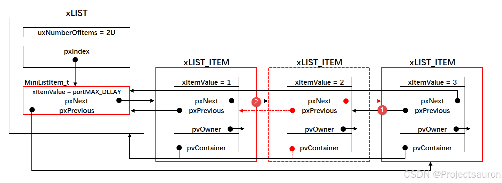

@toc
链表是 FreeRTOS 的核心数据结构，有关任务调度、延时、阻塞、事件等操作都是通过对链表进行操作进而实现的。本节将详细分析源码文件 list.c，list.h 的内容，为后续的任务队列等的实现奠定基础。
一、链表及链表项的定义 FreeRTOS 使用的链表结构是环形的双向链表，而关于链表节点的数据结构都在 list.h 中定义。
1、链表节点数据结构 xList_ITEM 首先来看链表节点数据结构定义：
1 2 3 4 5 6 7 8 9 10 11 12 13 struct xLIST_ITEM { listFIRST_LIST_ITEM_INTEGRITY_CHECK_VALUE configLIST_VOLATILE TickType_t xItemValue; struct xLIST_ITEM * configLIST_VOLATILE pxNext ; struct xLIST_ITEM * configLIST_VOLATILE pxPrevious ; void * pvOwner; struct xLIST * configLIST_VOLATILE pxContainer ; listSECOND_LIST_ITEM_INTEGRITY_CHECK_VALUE }; typedef struct xLIST_ITEM ListItem_t ;
其结构如下：

这里如果使用 configLIST_VOLATILE，其会被替换为 volatile 关键字。
1 #define configLIST_VOLATILE volatile
volatile 关键字是让编译器不对该变量进行优化，所谓的优化可以理解为其在生成汇编时，若多次读取该变量时其可能会将变量值放入寄存器中以加快读取速度，而不是真正的读取，这使得当某个变量会快速变化时，优化后“读取”的值并不是变量真实的值。当使用 volatile 关键字时，其会强迫编译器每次使用该变量时都真正的对它进行一次读取。
在链表项的结构体构造中值得注意的是 pvOwner 和 pxContainer 这两个成员变量。
pvOwner 指向该节点的拥有者，即该节点内嵌在哪个数据结构中，属于哪个数据结构的一个成员。它提供了一种可以快速访问由此链表项代表的对象的方法。pxContainer 用于指向该节点所在的链表，通常指向链表的根节点。它则提供了一种快速访问其所属链表的方法。
这种处理方式大大提高了链表在任务调度等应用中的处理速度，提高系统效率。
侵入式链表
struct list_head{struct list_head *next, *prev;}
使用链表时只需要将其包含进定义的对象中即可：
struct list_head{// 一些其它成员定义....struct list_head *next, *prev;// 一些其它成员定义....}
在此它没有定义类似 ListItem_t 中 pxContainer 这样的成员变量，其获得包含该链表项的对象地址是通过下面一段著名的宏定义实现的：
#define offsetof(s,m) (size_t)&(((s *)0)->m#define container_of(ptr, type, member) \({ \const typeof( ((type *)0)->member ) *__mptr = (ptr); \(type *)( (char *)__mptr - offsetof(type,member) ); \})
使用实例：
struct node test;struct list_head *list_item_add = &test.list_item;struct node *test_add = container_of(list_item_add, struct node, list_item);
container_of() 的实现思路简单概括就是：将成员变量地址减去成员变量在结构体类型中的变量便是实例对象的存储地址。以 struct node 结构体为例，其实例 test 在内存中的存储方式如下图左侧所示。下图右侧给出了如何获得成员在结构体存储中的偏移量，当 &test=0x00 时，其成员的地址便是所需要的偏移量。

因此，offsetof() 宏，其所作的事就是获得偏移量。而 container_of() 宏中的：
(type *)( (char *)__mptr - offsetof(type,member) );
便是用成员地址减去偏移量来获得实例的地址。至于 container_of() 宏中的前一句：
const typeof( ((type *)0)->member ) *__mptr = (ptr);
实时上是起到一个类型检验的作用，拓展关键字 typeof 可以获得变量的类型，如果传入的ptr的类型与成员变量类型不符，那么编译器便会抛出警告，便于检查是否出错。注意 typeof 并不是标准 C 中的关键字，如果所用的编译器不支持，可以将第一句删除，将第二句中的__mptr 替换为 ptr，宏 container_of() 仍然是正确的。
2、链表精简节点结构 xMINI_LIST_ITEM 这个结构是专门用来在下面要讲的 xLIST 表示尾节点，相比于刚才讲到的 xList_ITEM 要精简不少。
1 2 3 4 5 6 7 8 struct xMINI_LIST_ITEM { listFIRST_LIST_ITEM_INTEGRITY_CHECK_VALUE; configLIST_VOLATILE TickType_t xItemValue; struct xLIST_ITEM * configLIST_VOLATILE pxNext ; struct xLIST_ITEM * configLIST_VOLATILE pxPrevious ; }; typedef struct xMINI_LIST_ITEM MiniListItem_t ;
3、链表根节点结构 xLIST 1 2 3 4 5 6 7 8 typedef struct xLIST { listFIRST_LIST_INTEGRITY_CHECK_VALUE volatile UBaseType_t uxNumberOfItems; ListItem_t * configLIST_VOLATILE pxIndex; MiniListItem_t xListEnd; listSECOND_LIST_INTEGRITY_CHECK_VALUE } List_t;
结构图如下：


现在清楚了 List 的基本结构，下面是它的相关操作。
二、链表的相关操作 关于链表的相关操作函数的在 list.c 中实现。
1、初始化 1.1 链表节点初始化 1 2 3 4 5 6 7 8 9 10 void vListInitialiseItem ( ListItem_t * const pxItem ) { pxItem->pxContainer = NULL ; listSET_FIRST_LIST_ITEM_INTEGRITY_CHECK_VALUE( pxItem ); listSET_SECOND_LIST_ITEM_INTEGRITY_CHECK_VALUE( pxItem ); }
链表项的初始化十分简单只是将 pxContainer 置为NULL，设置一下校验值。
一个初始化好的节点示意图具体如下：
1.2 链表根节点初始化 1 2 3 4 5 6 7 8 9 10 11 12 13 14 15 16 17 18 19 void vListInitialise ( List_t * const pxList ) { pxList->pxIndex = ( ListItem_t * ) &( pxList->xListEnd ); pxList->xListEnd.xItemValue = portMAX_DELAY; pxList->xListEnd.pxNext = ( ListItem_t * ) &( pxList->xListEnd ); pxList->xListEnd.pxPrevious = ( ListItem_t * ) &( pxList->xListEnd ); pxList->uxNumberOfItems = ( UBaseType_t ) 0U ; listSET_LIST_INTEGRITY_CHECK_1_VALUE( pxList ); listSET_LIST_INTEGRITY_CHECK_2_VALUE( pxList ); }

2、插入 2.1 将节点插入到链表的尾部 1 2 3 4 5 6 7 8 9 10 11 12 13 14 15 16 17 18 19 20 21 22 23 24 25 void vListInsertEnd ( List_t * const pxList, ListItem_t * const pxNewListItem ) { ListItem_t * const pxIndex = pxList->pxIndex; listTEST_LIST_INTEGRITY( pxList ); listTEST_LIST_ITEM_INTEGRITY( pxNewListItem ); pxNewListItem->pxNext = pxIndex; pxNewListItem->pxPrevious = pxIndex->pxPrevious; mtCOVERAGE_TEST_DELAY(); pxIndex->pxPrevious->pxNext = pxNewListItem; pxIndex->pxPrevious = pxNewListItem; pxNewListItem->pxContainer = pxList; ( pxList->uxNumberOfItems )++; }
代码整体不难理解，主要是弄明白插入的过程中更改指针的指向：

2.2 将节点按照升序排列插入到链表 将节点按照升序排列插入到链表，如果有两个节点的值相同，则新节点在旧节点的后面插入：
1 2 3 4 5 6 7 8 9 10 11 12 13 14 15 16 17 18 19 20 21 22 23 24 25 26 27 28 29 30 31 32 33 34 35 36 37 38 39 void vListInsert ( List_t * const pxList, ListItem_t * const pxNewListItem ) { ListItem_t * pxIterator; const TickType_t xValueOfInsertion = pxNewListItem->xItemValue; listTEST_LIST_INTEGRITY( pxList ); listTEST_LIST_ITEM_INTEGRITY( pxNewListItem ); if ( xValueOfInsertion == portMAX_DELAY ) { pxIterator = pxList->xListEnd.pxPrevious; } else { for ( pxIterator = ( ListItem_t * ) &( pxList->xListEnd ); pxIterator->pxNext->xItemValue <= xValueOfInsertion; pxIterator = pxIterator->pxNext ) { } } pxNewListItem->pxNext = pxIterator->pxNext; pxNewListItem->pxNext->pxPrevious = pxNewListItem; pxNewListItem->pxPrevious = pxIterator; pxIterator->pxNext = pxNewListItem; pxNewListItem->pxContainer = pxList; ( pxList->uxNumberOfItems )++; }
vListInsert() 的实现比起 vListInsertEnd() 也就多了要先查找插入位置再进行插入操作。

3、删除 1 2 3 4 5 6 7 8 9 10 11 12 13 14 15 16 17 18 19 20 21 22 23 24 25 26 27 28 UBaseType_t uxListRemove ( ListItem_t * const pxItemToRemove ) { List_t * const pxList = pxItemToRemove->pxContainer; pxItemToRemove->pxNext->pxPrevious = pxItemToRemove->pxPrevious; pxItemToRemove->pxPrevious->pxNext = pxItemToRemove->pxNext; mtCOVERAGE_TEST_DELAY(); if ( pxList->pxIndex == pxItemToRemove ) { pxList->pxIndex = pxItemToRemove->pxPrevious; } else { mtCOVERAGE_TEST_MARKER(); } pxItemToRemove->pxContainer = NULL ; ( pxList->uxNumberOfItems )--; return pxList->uxNumberOfItems; }

4、宏函数 在 list.h 中，还定义了各种各样的带参宏，方便对节点做一些简单的操作。
1 2 3 4 5 6 7 8 9 10 11 12 13 14 15 16 17 18 19 20 21 22 23 24 25 26 27 28 29 30 31 32 33 34 35 36 37 38 39 40 41 42 43 44 45 46 47 48 49 50 51 52 #define listSET_LIST_ITEM_OWNER( pxListItem, pxOwner ) ( ( pxListItem )->pvOwner = ( void * ) ( pxOwner ) ) #define listGET_LIST_ITEM_OWNER( pxListItem ) ( ( pxListItem )->pvOwner ) #define listSET_LIST_ITEM_VALUE( pxListItem, xValue ) ( ( pxListItem )->xItemValue = ( xValue ) ) #define listGET_LIST_ITEM_VALUE( pxListItem ) ( ( pxListItem )->xItemValue ) #define listGET_ITEM_VALUE_OF_HEAD_ENTRY( pxList ) ( ( ( pxList )->xListEnd ).pxNext->xItemValue ) #define listGET_HEAD_ENTRY( pxList ) ( ( ( pxList )->xListEnd ).pxNext ) #define listGET_NEXT( pxListItem ) ( ( pxListItem )->pxNext ) #define listGET_END_MARKER( pxList ) ( ( ListItem_t const * ) ( &( ( pxList )->xListEnd ) ) ) #define listLIST_IS_EMPTY( pxList ) ( ( ( pxList )->uxNumberOfItems == ( UBaseType_t ) 0 ) ? pdTRUE : pdFALSE ) #define listCURRENT_LIST_LENGTH( pxList ) ( ( pxList )->uxNumberOfItems ) #define listGET_OWNER_OF_NEXT_ENTRY( pxTCB, pxList ) \ { \ List_t * const pxConstList = ( pxList ); \ \ \ ( pxConstList )->pxIndex = ( pxConstList )->pxIndex->pxNext; \ if ( ( void * ) ( pxConstList )->pxIndex == ( void * ) &( ( pxConstList )->xListEnd ) ) \ { \ ( pxConstList )->pxIndex = ( pxConstList )->pxIndex->pxNext; \ } \ ( pxTCB ) = ( pxConstList )->pxIndex->pvOwner; \ } #define listGET_OWNER_OF_HEAD_ENTRY( pxList ) ( ( &( ( pxList )->xListEnd ) )->pxNext->pvOwner ) #define listIS_CONTAINED_WITHIN( pxList, pxListItem ) ( ( ( pxListItem )->pxContainer == ( pxList ) ) ? ( pdTRUE ) : ( pdFALSE ) ) #define listLIST_ITEM_CONTAINER( pxListItem ) ( ( pxListItem )->pxContainer ) #define listLIST_IS_INITIALISED( pxList ) ( ( pxList )->xListEnd.xItemValue == portMAX_DELAY )